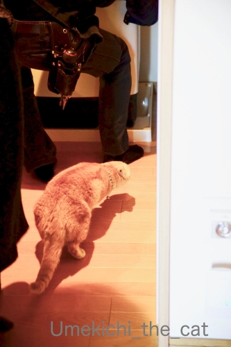
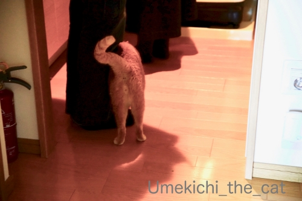
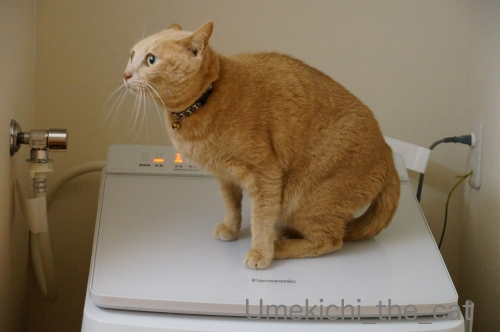
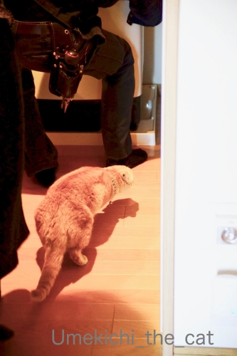
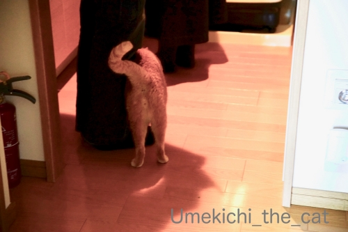
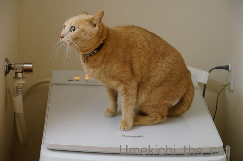

洗濯機のお兄さんは気に入ったらしい [梅吉]
おっとのインフルエンザ、月曜には熱も下がり火・水と自宅療養。
木曜日からお仕事始めとなりました。
私は！どうやらインフンルエンザウィルスに勝った模様![[手（チョキ）]](https://blog.ss-blog.jp/_images_e/87.gif)
いつも通りよく寝てよく食べて（八分目ですよ）変わったことといえば
いつにも増してお野菜を多めにとってビタミンCのサプリメントを飲んでたことぐらいかな。
ご心配いただいた皆様、ありがとうございましたm(_ _)m
**************************************************************************************************************************

![[猫]](https://blog.ss-blog.jp/_images_e/101.gif) なんや！なんや！！
なんや！なんや！！
とビックリまなこの梅吉さんw
先月の消防施設点検に続いてまたもや寝込みを襲われました。
かれこれ15、6年？使った洗濯機を買い替えました。
時々指示以外のことを勝手に始めたり動きが怪しかったので本当に嬉しい。
（例：給水ホースが繋がってない！とエラーが出る。延々すすぎを繰り返すなど、など）

古いのを運び出したり、新しいのを運び入れたりする音を聞いて起き上がってきました。

設置する位置などをお兄さんと確認し合うおかーさん。
・・・・と、ものすごく腰の引けたカフェオレ色がお兄さんの靴下に迫ってます！
お兄さんと話をしていたので気づかなかった私。
それをニヤニヤしながら撮影するおっとw

洗濯機の簡単な使用方法＆注意点の説明をするお兄さんの足にすりすりするカフェオレ色。
私はこの辺りで梅吉がいることに気づきました。
このすりすりを放っておくと次はダンゴムシになって足にガブ蹴りするのです！！
すぐに捕獲される梅吉wwwww
作業が全て終了するまで20分くらい？素早いお仕事で助かりました＾＾

新入りのチェックを入念に行ってます。
このあと何に興奮したのかわーわー鳴きながら走り回ってました(⌒-⌒;

初稼働！
聞きなれないモーター音にイカ耳！！
ドラム式とも思ったのですが「使いにくくて縦型に戻したい」なんて話も聞いたし
ドラム式じゃなきゃいけない理由もなかったので使い慣れた縦型を買いました。
今の洗濯機は縦型でも乾燥機能は標準搭載がほとんどなんですね。
それとゴミを取るネットがなくなってました。
お手入れしやすいカートリッジ式のフィルターみたいなのが付いてます。
へー！！こんなの初めて見ました。
え？私の認識古すぎます？？
洗剤＆柔軟剤の自動投入機能もなくてもいいんじゃない？と思っていたのですが
これが思いの外便利でにっこり。
そしてなにより稼働音が静か！！
古いのは「働いてますよー」と大きな音がしていたのですが
新しいのはだまって仕事をこなす感じ。
最初のうちは本当に動いているのか心配になって時々様子を見に行っちゃいましたw
日本の家電は日々進歩してますものね。（最近はちょっと元気ないけど）
私の知らない約15年間の洗濯機の劇的な進歩を目の当たりにしたのでした。

毎日新入りの働きぶりをチェックしに来る梅吉さん。
フタが傾斜しているので山岳地帯に住むヤギさんみたいにあちを踏ん張ってます＾＾
 ↑ガブッと一押し↑
↑ガブッと一押し↑
30日。北海道に帰ったらやっぱり味噌ラーメン。
さんぱちという札幌本社のチェーン店です。
札幌に住んでいるときは見向きもしなかったお店なんですけど（笑
トラディショナルな味噌ラーメンが食べたいと行ってみました。
（行ったのは千歳店）
これが！！思いの外美味しかった。本当に真面目な正統派の札幌味噌ラーメンです。
31日。千歳空港の「八雲」（これも札幌のチェーン店です）でおそば。
思えばこれが年越しそばだったんだわ。
「八雲」と言えば「ごまそば」のお店なんですが
千歳空港に出店するには「道産食材を使う」等の規約がいろいろあるらしく
この店では二八そばを出してました。きりりとしたおそば、美味しかったです。
注文したのはハーフサイズの冷やしたぬきと納豆そば。
こんな風に具沢山なのが北海道的！？
空港内の売店で買ったのは六花亭のサクサクパイ。
買って五分後にエスプレッソと共にいただきました＾＾
このビジュアル、関西暮らしが長いと「ちく天」に見えてしまうー(*>艸<)
このサクサクパイ、
サクサクした食感を楽しむためには購入後３時間以内に食さねばなりません。
かつては帯広本店でしか食べられなかったのですが
千歳空港で扱う様になり、どうやら今は札幌市内の店舗でも食べられるようです。
レア感は薄れましたが間違いなく美味しいです。
甘いもの好きな方は北海道に行ったら是非食べてみてくださいね。
お夕食には佐藤水産のお弁当を買って帰りました。
これと北海道の地酒（写真がない！何飲んだか忘れた！！）で年越しの食卓。
関西の濃いめ味の酢飯に口が慣れてきたのでちょっと物足りなかったけど。
今度は佐藤水産名物大きなおにぎりを買おうっと♪
木曜日からお仕事始めとなりました。
私は！どうやらインフンルエンザウィルスに勝った模様
いつも通りよく寝てよく食べて（八分目ですよ）変わったことといえば
いつにも増してお野菜を多めにとってビタミンCのサプリメントを飲んでたことぐらいかな。
ご心配いただいた皆様、ありがとうございましたm(_ _)m
**************************************************************************************************************************
とビックリまなこの梅吉さんw
先月の消防施設点検に続いてまたもや寝込みを襲われました。
かれこれ15、6年？使った洗濯機を買い替えました。
時々指示以外のことを勝手に始めたり動きが怪しかったので本当に嬉しい。
（例：給水ホースが繋がってない！とエラーが出る。延々すすぎを繰り返すなど、など）
古いのを運び出したり、新しいのを運び入れたりする音を聞いて起き上がってきました。

設置する位置などをお兄さんと確認し合うおかーさん。
・・・・と、ものすごく腰の引けたカフェオレ色がお兄さんの靴下に迫ってます！
お兄さんと話をしていたので気づかなかった私。
それをニヤニヤしながら撮影するおっとw

洗濯機の簡単な使用方法＆注意点の説明をするお兄さんの足にすりすりするカフェオレ色。
私はこの辺りで梅吉がいることに気づきました。
このすりすりを放っておくと次はダンゴムシになって足にガブ蹴りするのです！！
すぐに捕獲される梅吉wwwww
作業が全て終了するまで20分くらい？素早いお仕事で助かりました＾＾
新入りのチェックを入念に行ってます。
このあと何に興奮したのかわーわー鳴きながら走り回ってました(⌒-⌒;

初稼働！
聞きなれないモーター音にイカ耳！！
ドラム式とも思ったのですが「使いにくくて縦型に戻したい」なんて話も聞いたし
ドラム式じゃなきゃいけない理由もなかったので使い慣れた縦型を買いました。
今の洗濯機は縦型でも乾燥機能は標準搭載がほとんどなんですね。
それとゴミを取るネットがなくなってました。
お手入れしやすいカートリッジ式のフィルターみたいなのが付いてます。
へー！！こんなの初めて見ました。
え？私の認識古すぎます？？
洗剤＆柔軟剤の自動投入機能もなくてもいいんじゃない？と思っていたのですが
これが思いの外便利でにっこり。
そしてなにより稼働音が静か！！
古いのは「働いてますよー」と大きな音がしていたのですが
新しいのはだまって仕事をこなす感じ。
最初のうちは本当に動いているのか心配になって時々様子を見に行っちゃいましたw
日本の家電は日々進歩してますものね。（最近はちょっと元気ないけど）
私の知らない約15年間の洗濯機の劇的な進歩を目の当たりにしたのでした。
毎日新入りの働きぶりをチェックしに来る梅吉さん。
フタが傾斜しているので山岳地帯に住むヤギさんみたいにあちを踏ん張ってます＾＾
30日。北海道に帰ったらやっぱり味噌ラーメン。
さんぱちという札幌本社のチェーン店です。
札幌に住んでいるときは見向きもしなかったお店なんですけど（笑
トラディショナルな味噌ラーメンが食べたいと行ってみました。
（行ったのは千歳店）
これが！！思いの外美味しかった。本当に真面目な正統派の札幌味噌ラーメンです。
31日。千歳空港の「八雲」（これも札幌のチェーン店です）でおそば。
思えばこれが年越しそばだったんだわ。
「八雲」と言えば「ごまそば」のお店なんですが
千歳空港に出店するには「道産食材を使う」等の規約がいろいろあるらしく
この店では二八そばを出してました。きりりとしたおそば、美味しかったです。
注文したのはハーフサイズの冷やしたぬきと納豆そば。
こんな風に具沢山なのが北海道的！？
空港内の売店で買ったのは六花亭のサクサクパイ。
買って五分後にエスプレッソと共にいただきました＾＾
このビジュアル、関西暮らしが長いと「ちく天」に見えてしまうー(*>艸<)
このサクサクパイ、
サクサクした食感を楽しむためには購入後３時間以内に食さねばなりません。
かつては帯広本店でしか食べられなかったのですが
千歳空港で扱う様になり、どうやら今は札幌市内の店舗でも食べられるようです。
レア感は薄れましたが間違いなく美味しいです。
甘いもの好きな方は北海道に行ったら是非食べてみてくださいね。
お夕食には佐藤水産のお弁当を買って帰りました。
これと北海道の地酒（写真がない！何飲んだか忘れた！！）で年越しの食卓。
関西の濃いめ味の酢飯に口が慣れてきたのでちょっと物足りなかったけど。
今度は佐藤水産名物大きなおにぎりを買おうっと♪

カフェオレ色の梅吉

梅吉 2023年8月10日 永眠


梅吉と出会った譲渡会

犬猫の理由なき殺処分ゼロ
妄想広告
UMEKICHI 光

爆発的に早い！
時々攻撃的！
Thanks to Mr.Boss365
爆発的に早い！
時々攻撃的！
Thanks to Mr.Boss365

お兄さんに忍び寄る梅吉さんお耳が無くなって別の生き物みたいです~。
by zombiekong (2020-01-09 00:43)
洗濯機のお兄さんはきっと優しさオーラが出ていたのかな♪
梅吉さんのお眼鏡にかなったお兄さんが羨ましいです～
そしてこの時間に見るに堪えないさんぱちの味噌ラーメン(；ﾟдﾟ)ｺﾞｸﾘ
今ほどどこでもドアが欲しいと思ったことはありません。
サクサクパイはけっしてうどんに入れてはダメですよ(笑)
by yamatonosuke (2020-01-09 02:44)
お兄さんに恐々近づく姿がなんとも良いですねぇ。
ごみ取りネットに貯まった毛を毎回掃除してるのですが
フィルターだと掃除の頻度はどうなんでしょうね？＾＾；
by ぽちの輔 (2020-01-09 06:53)
おお！Panasonic！
洗剤自動投入、いいでしょ〜！
私もこの機能はめちゃ気に入ってます。
洗濯物入れて、電源ON、おまかせボタンON、
普段はボタン2回押すだけでやってますよ。
うちは洗濯機の下を掃除できるように
四隅にかさ上げの専用ゴム台を2段重ねにして
設置してるんで、ドラム式でも屈まず中のを
取り出せますー(^｡^)
by よーちゃん (2020-01-09 07:53)
梅吉さん、ほんっと人見知りしないのねぇ。
お兄さんに大接近！ガブガブまであと一息！直前で制止はちょっと残念(^^;)
うちの洗濯機は、フタが閉まっているのに「開いている！」とエラーを出してしまうので、レンガ入りのドアストッパーを重しに置いています(笑)
これ ⇒ https://chatbleu.blog.ss-blog.jp/2018-08-08
それでなんとかなってるから、ま、いっかー。
ゴミ取りネットではなくてフィルダー、良いですよね。前にネットが先に壊れたことあるもん。
by ChatBleu (2020-01-09 08:12)
梅吉さん、知らない人にスリスリするなんて本当にお利口さんですね。我が家の猫は絶対他人には近づきませんでした。
我が家の洗濯機は横型なんですが、10年前に買った物で激しい洗濯機です。洗濯中に振動で洗濯機の位置が変わっているのです(^_^;)
by kou (2020-01-09 08:30)
我が家も14年でドラム式が壊れて縦型に変えました！
でもドラム式より乾燥も早いので良い感じで使っています(^^)
梅吉さんもチェックに余念がありませんね。
by ma2ma2 (2020-01-09 09:09)
忍び寄る梅吉さん♪可愛過ぎます(*´ω｀*)
我が家もドラム式を使ってましたが
２時間以上、すすぎ続けるので（故障）
いらいらして縦型に買い換えました♪
以前のドラム式がタオルなどがフワフワにならず・・
なんで？って思ったら、
乾燥機使わないとフワフワにならないと
後で知りました・・・（その機種は）
毎回、お天道様に干してました（笑
by きぃ (2020-01-09 10:29)
洗濯機って壊れると勝手なことしますよね＝わかる
私も騙し騙し使ってたことあるけど、すごいストレスになってたから、買い換えて正解！
梅吉さんのおちりがかわゆいw
by じゅらまろ (2020-01-09 10:57)
こんにちは。
ちぃさんインフルに完全勝利！！おめでとうございます。流石です。
ご主人もインフル乗り切り良かったです。
洗濯機購入！！羨ましいい。小生洗濯機は２０年モノになりました（笑）
梅吉君、ゲリラ部隊みたいな行動（笑）匍匐前進・ゲリラ猫？ですね。
ニヤニヤ顔のおっとさんの気持ち分かります。
梅吉君の「すりすり」ナイスです（笑）「ガブ蹴り」見たかった（爆）
中腰のイカ耳も最高ですね（笑）大ちゃんをしそうな感じです（爆）
『古いのは「働いてますよー」』表現最高！！ツボにハマりそう・・・。
稼働音が静かなのはメリットあり、
小生洗濯機、時々詰め込み過ぎでドタドタ音あり？止めに入る事が度々です。
ところで、千歳空港「ちく天」（爆）美味しそうです！？(=^･ｪ･^=)
by Boss365 (2020-01-09 11:40)
インフンルエンザウィルスに勝利宣言！実に素晴らしい(^^
新しい洗濯機、何やらスタイリッシュなフォルムですねｗ
私も買い換えたいなぁ洗濯槽の裏側の汚れのゴミが洗濯物につくことがあり
とても不愉快なのでした。
設置に来たお兄さんにすりすりするなんてよほどお気に召したのですね。
ガブ蹴り状況になった際の両者の反応も見たかったです(;^_^A
どんなお弁当で飲んだくれたのかと思ったら！うにごはんと石狩鮨という
豪華ラインナップではないですか！ 美味しかったんでしょうね。
やはり関西の酢飯は味が濃いのでしょうか？やたらと喉が乾きます。
by marimo (2020-01-09 11:53)
洗濯機のお兄さん、梅吉さんのガブ蹴りを体験できなかったのは残念でした^^;
新参者を見つけて忍び寄るオチリが可愛いすぎる～っ♪
初めての人にスリスリしちゃうってほんと懐っこいですね！
我が家も昨年15年ほど使った洗濯機を変えたばかり。
あまりに音が静かで時々確認に行くお気持ち、よくわかります(≧▽≦)
北海道グルメの旅、どれをとっても美味しそう。
え？関西の酢飯って味が濃いの？！ 知らんかった～( ;∀;)
ちく天とかハムカツとか、そのまま食べられるのに何で揚げるんだろう？？と子供心に思っていた記憶があります。
脂が美味しいんですよね！
by ゆきち (2020-01-09 12:18)
体調、復活してよかったですねっ♪
旦那さんがニヤニヤしながら写真撮ってるとこを想像すると
笑えますっ！（笑）
by yuppie (2020-01-09 13:28)
だんなさま、復帰おめでとうー！
そしてちぃさん、インフルに勝ちましたね。すごいわ！！
梅吉くんに是非ともガブ蹴りやってほしかった(笑)(笑)(笑)
洗濯機、うちも意味不明な動きをするんだけど、まだ頑張って使ってるわ。
限界がくるのはいつだろうｗｗ
ラーメン「さんぱち」は入ったことないよぉ。
これぞ札幌味噌ラーメンって感じだね^^
お腹空いて来ちゃった・・・
by リュカ (2020-01-09 16:26)
ウチは2年前に、ドラム式をドラム式に買い替えたのですが、
その機種がハズレだったらしく、よく故障します（汗）
変なマークが出たり諸々・・。既に修理は3回です。
やはり縦型が良いよいのかも！
by angie17 (2020-01-09 18:24)
インフルエンザウイルスに勝ったんですね( ^ω^ )
おめでとうございます*\(^o^)/*
梅吉さん、「初めまして」のお兄さんにすりすりするなんて(°_°)
そのお兄さんの何が良かったのか、是非とも私に教えてください(_ _)
うちの洗濯機もそろそろヤバイ（たまに働いてる感を訴えるw）けれど
もう少しというかまだまだ頑張って欲しいんですよねぇ(*_*)
冷蔵庫の方が先に買い替えになりそうなので・・・
家電ってどうしてこう一気に主張するんだろう(´･_･`)
by ニッキー (2020-01-09 20:45)
インフルに勝利！良かったですね。^^)
梅吉さん、初対面の人にもスリスリやるのでしょうか。素晴らしい。
味噌ラーメン、美味しそうですね。
最近、お腹周りを気にしてラーメン食べてません。。。
うにごはん＆石狩鮨、パッケージ見ただけでヨダレがでてきます。^^;
by yes_hama (2020-01-09 22:23)
縦型の洗濯機を買われたのですね
我が家も以前はドラム式だったのですが
故障が多くて姑が「前のが良い」と縦型に戻しました
梅吉君、初めましての方でも積極的にアプローチですね
配達のお兄さんも猫好きさんだったのかな？
by 藤並 香衣 (2020-01-09 23:20)
お兄さんも嗅がれてうれしかったのでは～？
山岳ヤギ並みの洗濯機トレーニングで足を鍛えられますね。
味噌ラーメンおいしそう～～
by liang (2020-01-10 07:45)
体調不良で、しばらく休んでおりました（ﾟ□ﾟ）
本年もよろしくお願い致します。
by 英ちゃん (2020-01-10 17:49)
ご主人様、回復して良かったです。
私もビタミンCのサプリを飲んでいるからか、
ほとんど風邪をひきません。
梅吉さん、入念なチェック、お疲れ様でした。
蓋がシュッとして素敵ですね。
我が家の洗濯機は8年くらい経ってますが、
稼動時は静かです。
最初の頃はちぃさんと同じように、何度も確認しに行きました（笑）
（推測ですが）この時期あたりから、静かになったと思います。
で、日本は軟水なので
縦型の洗い方が良いそうです。
外国は硬水なので、
洗濯物を叩く必要があるのでドラム式だそうです。
で、プロの洗濯屋さんから見ると
日本の洗濯機は節水などで、
水が少な過ぎるそうです。
たっぷりの水で洗う方が汚れ落ちには良いそうです（チョットお節介でした）
by kiki (2020-01-10 23:54)
梅吉さん、お兄さんにスリスリかわいいにゃあ。
by ニコニコファイト (2020-01-11 09:00)
15年もったのがすごい！
うちの洗濯機は節水型でうっかりしてると洗濯物が水に沈んでないことも(T_T)
なので自動で水量を測った後に手動で水の量を増やしてます。全自動とはいかに(;^ω^)
by palpal (2020-01-11 12:01)
わ〜♡ 梅吉さんのお・も・て・な・し♡
お兄さん、めちゃうれしかったのでは〜?! (^^)v
ウチも洗濯機は縦型です。だって、ドラム式ってお高いんですもの。。
インフルに勝利!!! すばらしき快挙でございますよ♪
by のらん (2020-01-11 12:11)
よそさまガブ蹴りはまずいですものね^m^
うちもそろそろ洗濯機変えたいです。
乾燥機こわれてるし
せまいから、洗濯物だしずらくて
縦型にもどしたい！
by ふにゃいの (2020-01-11 14:45)
何と！！これは羨ましい！！
ウチも今はなきサンヨー製で15年が来そうです…でも謎のエラーもなく何とか動いてくれてるので、日々「ガンバレ〜」と応援してご機嫌を取ってますwww
新機能も嬉しいですね〜♪いいな〜(*'▽'*)
梅吉しゃまも新入りさんの監視は怠らず、仕事振りを見つめているのですね！！厳しいわ〜笑
洗濯機さんも緊張して業務に勤しんでいる事でしょう(^^)
by くつしたにゃん (2020-01-16 16:47)